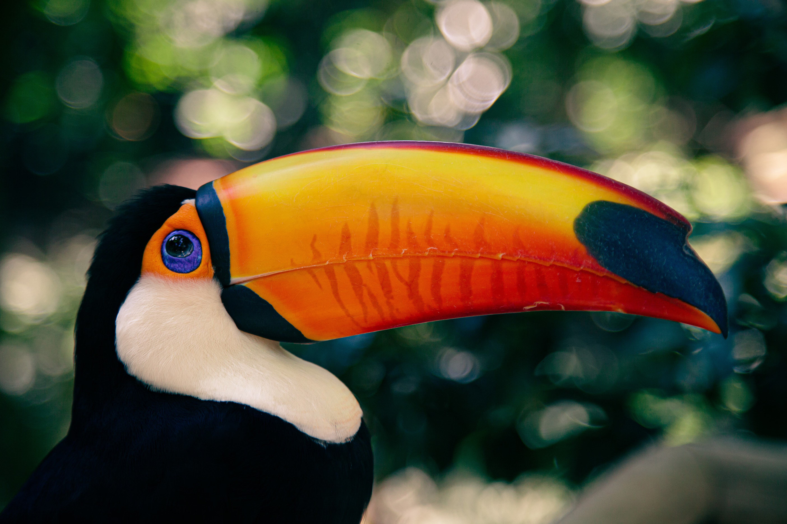

Fedezd fel az esőerdők világát
Az esőerdő nem második világ
Mindannyiunk otthona
A trópusi esőerdők bolygónk legváltozatosabb élőhelyei: a Föld szárazföldi fajainak több mint fele itt talál menedéket. Hatalmas szénkészleteket őriznek, vizet párologtatnak a légkörbe, és kontinenseken át formálják az időjárást.
Minden fa, inda és apró élőlény egy összefüggő, érzékeny rendszer része. Az erdőirtás nemcsak ritka fajok otthonát tünteti el, hanem felgyorsítja a klímaváltozást, és helyi közösségek megélhetését is veszélyezteti.
A védelem közös felelősségünk, és a hétköznapi döntéseinkkel is hatással lehetünk rá. Ismerd meg ezt a különleges világot, válassz tudatosan, és segíts életben tartani bolygónk zöld szívét.

Az esőerdők bolygónk legősibb, legösszetettebb és legrejtélyesebb szárazföldi ökoszisztémái, amelyek
már tízmillió évnél is régebben léteznek, és az élet olyan elképesztő bőségét rejtik, amely sehol
máshol nem található meg a Földön. Bár a szárazföldeknek csupán elenyésző részét borítják, bennük él
az ismert növény- és állatfajok több mint fele. Ezek a sűrű, örökké zöldellő vadonok nemcsak a
biológiai sokféleség felbecsülhetetlen értékű tárházai, hanem a globális éghajlati rendszer
szabályozásának is a legfőbb tartóoszlopai.
Ha belépünk egy trópusi esőerdő mélyére, egy teljesen egyedi, sajátos törvények szerint működő
világban találjuk magunkat, amelyet a fojtogató pára, a fülledt meleg és az állandó félhomály
határoz meg. Az erdő szerkezete leginkább egy többszintes lakóházhoz hasonlít, ahol a különböző
magasságokban teljesen eltérő életközösségek alakultak ki. A legfelső szintet a lombkorona fölé
magasodó, akár hetven méteres óriásfák alkotják, amelyek magányos őrtornyokként dacolnak a perzselő
nappal és az erős szelekkel. Alattuk húzódik a tulajdonképpeni lombkoronaszint, egy összefüggő,
sűrű, zöld szőnyeg, amely szinte teljesen elzárja a napfényt az alant lévő világtól. Ez a zóna az
erdő legélénkebb része, itt zajlik a valódi nagyüzemi élet: majmok csapatai ugrálnak az ágak között,
színpompás madarak, papagájok és tukánok rikácsolnak, miközben a fák kérgén orchideák és más
különleges növények kapaszkodnak, amelyek a talaj helyett a magasban gyűjtik össze a túlélésükhöz
szükséges csapadékot és fényt.
Ahogy lejjebb ereszkedünk az alsóbb szintekre és a cserjeszinthez, a fény drámaian megfogyatkozik.
Itt már csak az a kevés fénysugár jut el a talajig, amely átfér a sűrű levelek résein. Ebben a
tartományban a növények hatalmas, széles leveleket növesztenek, hogy a lehető legtöbb energiát
fogják fel a félhomályban. Végül az erdő talaja egy egészen misztikus, csendes birodalom. A
hiedelmekkel ellentétben a trópusi esőerdők talaja nem burjánzik a sűrű bozóttól, hiszen a fény
hiánya ezt megakadályozza. Ehelyett a földet lehullott levelek, korhadó fatörzsek és ágak borítják,
amelyeket a gombák, rovarok és mikroorganizmusok serege hihetetlen sebességgel bont le és alakít
vissza tápanyaggá. Ez a folyamat a kulcsa az esőerdők fennmaradásának: a tápanyagok nem a talajban
raktározódnak, hanem szinte azonnal visszakerülnek az élő növények keringésébe.